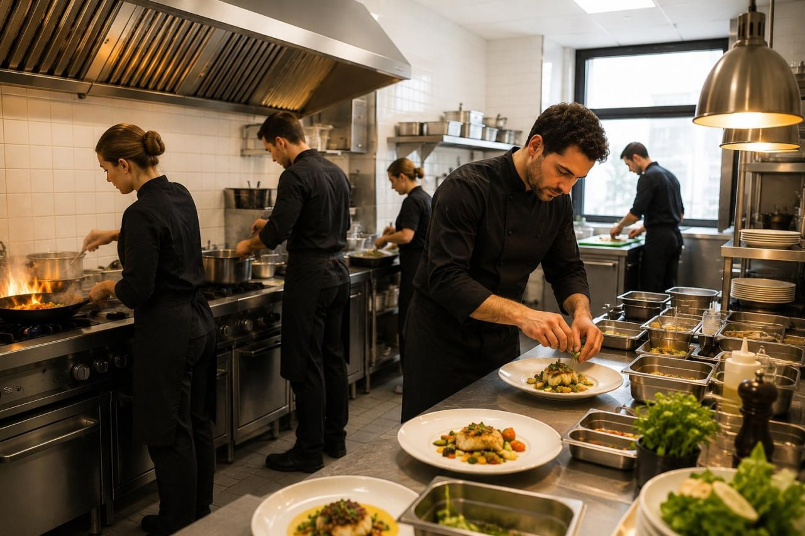

Desayunos y carta, en tu oficina o en casa.
Desayunos contundentes, platos de nuestra carta y los platos Shelby más clásicos, todo disponible por Glovo para que llegue caliente a tu oficina o a tu casa.

Todo se cocina en el momento, con producto fresco. Pide desde Glovo y llega caliente a tu oficina o casa.
Lo mejor de Smithers, a tu puerta.
Desayunos contundentes
Tostadas, bollería, café, zumos… desde las 7:00. Arranca el día con energía sin moverte de tu sitio.
Carta Smithers
Arroces, carnes, pescados, ensaladas y nuestros platos más clásicos. Todo lo que te gusta de Smithers, en casa o en la oficina.
Platos Shelby
Nuestra selección de platos Shelby, con el toque especial que los hace únicos. Perfectos para un delivery diferente.
Pide directamente desde la app de Glovo y recibe en tu oficina o casa. Abrir tienda →
Preguntas frecuentes sobre el delivery
¿Cómo pido delivery de Smithers?
Abre la app de Glovo, busca «Smithers Restaurant» en Madrid (zona San Blas-Canillejas), elige tus platos y confirma la dirección.
¿A qué zonas lleváis a domicilio?
Repartimos en San Blas-Canillejas y alrededores de la Calle Albasanz, 28037 Madrid. Comprueba en Glovo si tu dirección entra en el área.
¿Cuál es el horario de delivery?
De lunes a viernes de 12:00 a 16:30 a través de Glovo. Los horarios pueden variar según la disponibilidad de la plataforma.
¿Los precios del delivery son los mismos que en el restaurante?
Sí, los precios de los platos son los mismos. Glovo aplica su propio suplemento de servicio y envío.
¿Qué puedo pedir a domicilio?
Platos del menú del día, hamburguesas y bocadillos, ensaladas, bebidas y postres, según disponibilidad en la app.